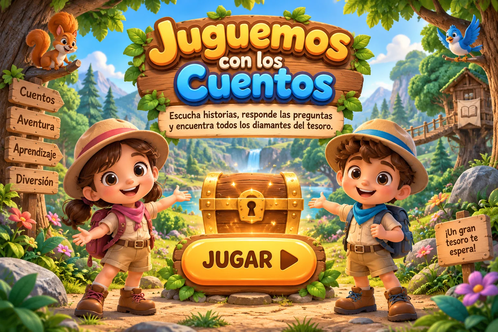
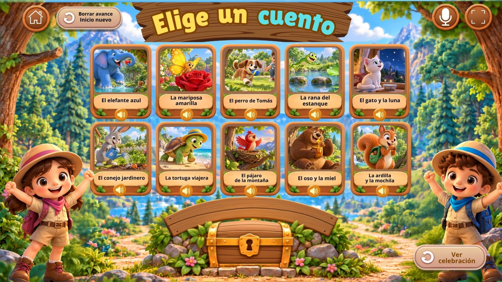
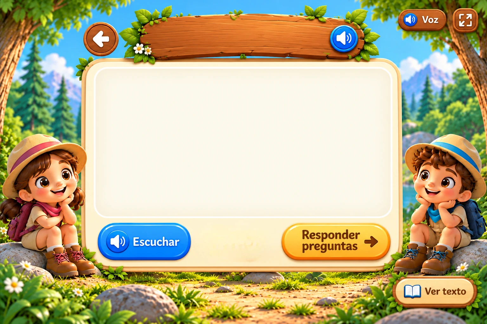
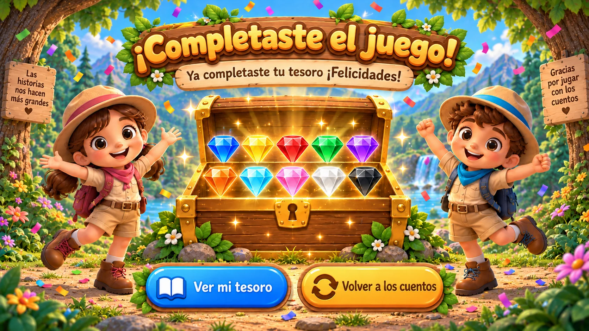

🔊 Voz
⛶
Fonoaudióloga María José Villa Ortega

⌂
Mi tesoro
🎉 Ver celebración


¡Mi tesoro está completo!
Encontraste los 10 diamantes.
Volver a la celebración
🔊 Escuchar texto
Cerrar texto
Volver